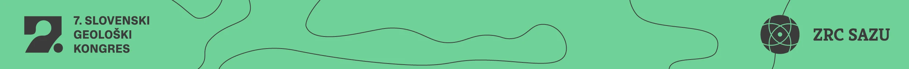
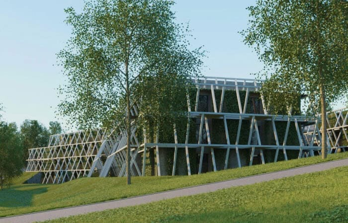
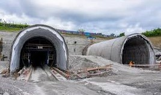
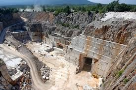
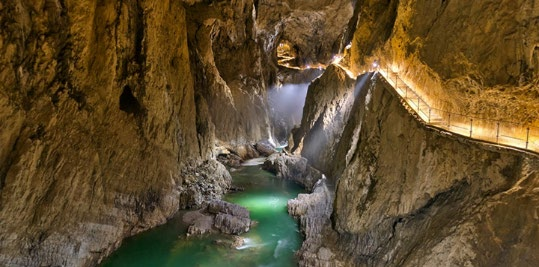
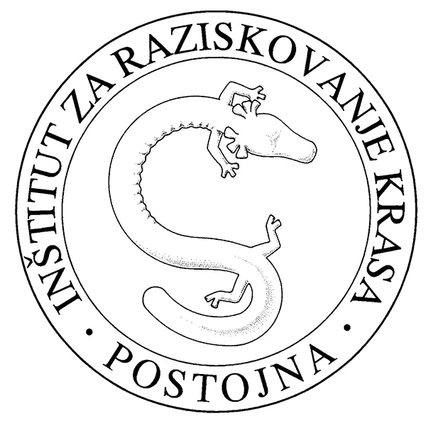
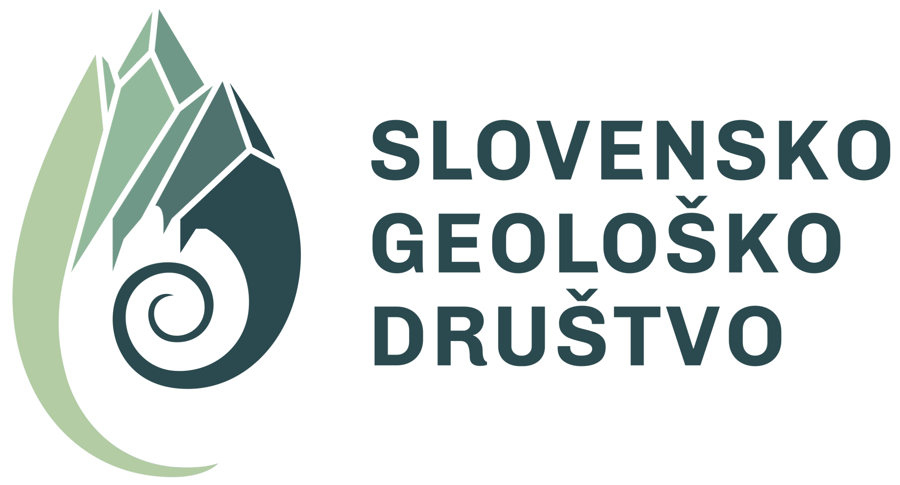

Obvestilo
Spoštovani,
obveščamo vas, da Inštitut za raziskovanje krasa ZRC SAZU organizira 7. Slovenski geološki kongres.
Kongres bo potekal v Hotelu Maestoso, v kongresnem centru Conversano v Lipici, od 1. do 3. oktobra 2026.
Preliminarni program kongresa, cene in pomembni datumi so navedeni spodaj. Prijave in spletna stran se odprejo v ponedeljek, 16. 3. 2026. Spletna stran kongresa je že aktivna in bo ažurna skladno z navedenimi datumi: http://sgk.zrc-sazu.si/.
V imenu organizacijskega odbora 7. SGK vas lepo pozdravljam, dr. Astrid Švara.
Prijava in cene
Prijave na 7. SGK se odprejo 16. marca 2026. Prijave bomo sprejemali le preko prijavnega obrazca, dostopnega na spletni strani. Višina kotizacij se spreminja skladno s pogoji in datumi, navedenimi v rubriki »Pomembnejši datumi«.
| Kotizacija | Cena (€) z DDV | Opomba |
|---|---|---|
| Redna zgodnja | 350,00 | |
| Redna pozna | 450,00 | |
| Redna zgodnja za člane SGD* | 300,00 | * članarina za 2026: povezava |
| Redna pozna za člane SGD* | 400,00 | * članarina za 2026: povezava |
| Študentska/upokojenska** zgodnja | 200,00 | ** z ustreznim dokazilom |
| Študentska/upokojenska** pozna | 250,00 | ** z ustreznim dokazilom |
| Medkongresna ekskurzija: ogled kobilarne Lipica | 16,00 | |
| Pokongresna ekskurzija | 40,00 |
Kotizacija vključuje: kongresni paket s tiskanim zbornikom in vodnikom, okrepčila med odmori, kosilo prvi in drugi dan, kongresno večerjo prvi dan ter zaključno večerjo drugi dan.
Stroški namestitve niso vključeni v kotizacijo. Rezervacija in plačilo namestitve potekata preko povezave: https://www.lipica.org/sl/prijava-na-kongres/. Z geslom lipica1580 dostopate do kongresnih cen namestitve. Povezava bo na voljo tudi ob prijavi, na spletni strani kongresa.
Registracija in prispevki
Povzetki morajo biti oddani najkasneje do 20. julija 2026 z uporabo spletnega obrazca (odpre se 16. 3. 2026).
Uradni jezik 7. SGK je slovenščina, zato morajo biti prispevki napisani v slovenščini. Če je glavni avtor tujec (oziroma njegov glavni/govoreči jezik ni slovenščina), je dovoljena oddaja prispevka in predstavitve v angleščini.
Udeleženci lahko izberejo obliko predstavitve (plakat ali predavanje). S plačilom ene kotizacije je udeleženec upravičen do enega prispevka kot prvi avtor. Navodila za pripravo prispevkov bodo objavljena na spletni strani kongresa.
Avtorji oddajo svojo predstavitev na ključku ob registraciji, najkasneje na dan predavanja. Dolžina predavanja bo določena po prejemu vseh povzetkov. Predvideni sta dve vzporedni sekciji, ki bosta oblikovani glede na prejete teme prispevkov. V primeru presežka predavanj glede na razpoložljive termine bo organizator del prispevkov premaknil v plakatno obliko.
Plakati bodo izobešeni na panojih pred glavno dvorano »Capriola«. Avtorji oddajo plakate dopoldan ob registraciji na prvi kongresni dan. V času predstavitve so avtorji na voljo ob panojih za vprašanja in pogovor. Plakate snamejo do konca drugega kongresnega dne; v nasprotnem primeru si organizator jemlje pravico plakate odstraniti.
Vsi avtorji so vabljeni k objavi prispevkov v obliki znanstvenega članka v reviji Geologija. Rok za oddajo je 28. septembra 2026. Več informacij: https://www.geologija-revija.si/index.php/geologija/.
Fotografski natečaj »Geologija krasa«
V sklopu kongresa bo potekal fotografski natečaj na temo »Geologija krasa«. Fotografije naj zajemajo različne geološke oblike (geomorfološke, hidrogeološke, tektonske, sedimentološke in druge strukture), kras v inženirski geologiji ter kamnine v povezavi s kulturnimi in naravovarstvenimi vidiki.
Točna navodila (format fotografij, podrobni opis vsebine in dodatna pravila) bodo pravočasno objavljena na spletni strani. Lastniki treh zmagovalnih fotografij prejmejo tematske nagrade. Fotografije se zbirajo najkasneje do 1. septembra 2026.
Pomembnejši datumi 2026
- 1. obvestilo: 20. 2.
- 2. obvestilo: april/maj
- 3. obvestilo: avgust/september
- Zgodnja prijava: 16. 3. - 29. 5.
- Oddaja prispevka: 16. 3. - 20. 7.
- Pozna prijava z oddajo prispevka: 29. 5. - 20. 7.
- Prijava na fotografski natečaj: 16. 3. - 1. 9.
- Obvestilo avtorjem: julij/avgust
- Rezervacije nočitev po nižji ceni*: do 30. 6.
*Obrazec za rezervacijo nočitev bo na voljo tudi na kongresni spletni strani. Po tem roku proste sobe in nočitve po kongresnih cenah niso zagotovljene.
Dodatne informacije
- Prijave na ekskurzije (ogled kamnoloma Lipica ali ogled kobilarne Lipica ter sobotna ekskurzija) zbiramo na prijavnem obrazcu na spletni strani.
- Omejitev za ogled kobilarne je 45 ljudi. Prijave so možne do zapolnitve mest.
- Omejitev za sobotno ekskurzijo je 50 ljudi (en avtobus). Če bo interes večji, bomo zbirali prijave za dodatni kombi/avtobus.
Okvirni program
Program se lahko spremeni skladno s številom prejetih prispevkov. Ob spremembah bodo avtorji obveščeni pravočasno.
Četrtek, 1. 10. 2026 · 1. dan kongresa
- 8:00-12:30 in 16:30-18:30 · Registracija udeležencev (pri recepciji hotela)
- 9:00-10:00 · Otvoritev kongresa in uvodno predavanje (glavna dvorana »Capriola«)
- 10:00-10:30 · Odmor (pri mizi za registracijo)
- 10:30-12:30 · Predavanja (vzporedni sekciji v dvorani »Capriola« in »Bonavista«)
- 12:30-14:00 · Kosilo
- 14:00-16:00 · Ogled Kobilarne Lipica ali Kamnoloma Lipica*
- 16:30-18:00 · Predavanja (vzporedni sekciji)
- 18:00-18:45 · Predstavitve plakatov** (pred dvorano »Capriola«)
- 19:15- · Kongresna večerja in zabava z ansamblom Geobanda
Petek, 2. 10. 2026 · 2. dan kongresa
- 8:00-12:30 · Registracija udeležencev
- 9:00-9:30 · Plenarno predavanje (glavna dvorana »Capriola«)
- 9:45-11:00 · Predavanja (vzporedni sekciji)
- 11:00-11:30 · Odmor
- 11:30-12:30 · Predavanja
- 12:30-14:00 · Kosilo
- 14:00-16:00 · Predavanja
- 16:00-16:30 · Odmor
- 16:30-18:00 · Predavanja
- 18:05-18:55 · Podelitev nagrad in priznanj (foto-natečaj, SKIAH***) in zaključek kongresa
- 18:55-19:15 · Volilna skupščina Slovenskega geološkega društva
- 19:30-21:00 · Zaključna večerja
- 21:00- · Druženje in zabava udeležencev kongresa
Sobota, 3. 10. 2026 · Pokongresna ekskurzija
- 8:30-11:45 · 2TDK, Severni portal T1 in servisna cev (geologija, paleokras, hidrogeologija, jame, geotehnološki del gradnje tunela)
- 12:00-13:30 · Kosilo
- 13:30-16:00 · Škocjanske jame (strokovno vodenje po turističnem delu)
* Ogled Kobilarne Lipica in Kamnoloma Lipica sta sočasni ekskurziji: ob prijavi na spletni strani označite, katere bi se radi udeležili. V Kamnolom Lipica udeleženci gredo peš ali z osebnim avtomobilom. Spremembe so možne do zasedbe mest.
** Predstavitve plakatov bodo potekale individualno interesentom; avtorji naj bodo v času predstavitev ob svojih plakatih.
*** Društvo hidrogeologov SKIAH podeljuje priznanja za dosežke na področju hidrogeologije za obdobje 2015-2025.
Prizorišče in organizator
Prizorišče kongresa
- Hotel Maestoso, Lipica
- 2TDK
- Kamnolom Lipica
- Škocjanske jame




Organizator
Inštitut za raziskovanje krasa ZRC SAZU
Titov trg 2, 6230 Postojna
T: 05 70 019 00
E-mail: astrid.svara@zrc-sazu.si
Kontaktna oseba: Astrid Švara
Organizacijski odbor: Astrid Švara, Nadja Zupan Hajna, Martin Knez, Bojan Otoničar, Mitja Prelovšek, Franci Gabrovšek, Cyril Mayaud, Uroš Novak, Matej Jelovčan, Tinkara Mazej, Filip Šarc, Metka Petrič, Stanka Šebela, Blaž Kogovšek.

Soorganizator
Slovensko geološko društvo
